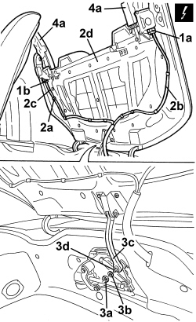
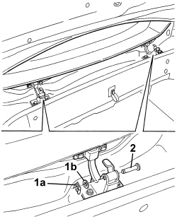
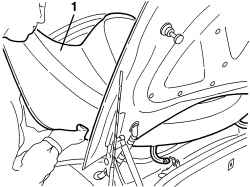

7210E46 HOOD HOUSING COVER - R.R.
- Path
- Procedures > 72 PANELS AND FRAMES > 7210 REMOVING-REFITTING > 7210E EXTERNAL PARTS > 7210E46 HOOD HOUSING COVER - R.R.
- Kind
- repair procedure (removal / refitting; the operation number is the code)
- Applies to
- engines: 2.2 JTS, 3.2 JTS; all production periods
- Interactive page
- https://sloeber94.github.io/elrnDB-aBrrSpdr/en/#/946004207
Applies to: engines: 2.2 JTS, 3.2 JTS; all production periods
 Removing
Removing
 Refitting
Refitting- Prepare the hood for the operation.
Op. 0010T79 HOOD HYDRAULIC SYSTEM - DISCHARGE AND RESTORE PRESSURE
Op. 7025D12 HOOD HOUSING COMPARTMENT COVER INNER LINING - R.R.
Op. 7025D15 TELESCOPIC STRUT FOR HOOD HOUSING COMPARTMENT COVER (ONE), LEFT OR RIGHT - R.R.
1. Disconnect the electrical connections (1a) and (1b) for the side cover operating motors.
Description | Component |
|---|---|
LEFT HOOD FLAP CONTROL MOTOR | |
RIGHT HOOD FLAP CONTROL MOTOR |
2. Release the retainers (2a) and detach the wiring (2b) and (2c) from the cover (2d).
3. With the help of a second mechanic, support the cover (2d), then undo the nut (3a) and keep the spacer (3b); lastly, disconnect the lower end (3c) of the rod from the pin (3d).
4. Lower the side covers (4a) manually, then lower the cover (2d) until it is in the end of travel position.

Applies to: engines: 2.2 JTS, 3.2 JTS; all production periods
- Open the boot lid using the emergency control.
1. Release the retainers (1a) and remove the washers (1b) for the hood housing cover hinges.
2. Remove the pins for the hinges.

Applies to: engines: 2.2 JTS, 3.2 JTS; all production periods
1. With the help of a second mechanic, raise the hood housing cover to around 45° and extract it very carefully from the vehicle.

Applies to: engines: 2.2 JTS, 3.2 JTS; all production periods
- If necessary, strip the component.
Applies to: engines: 2.2 JTS, 3.2 JTS; all production periods
Refitting
Removing- Check that the hood housing cover is not damaged.
- With the help of a second mechanic, carefully position the hood housing cover and lower it in a closed position.
- Fit the pins for the hinges.
- Fit the washers and attach the retainers.
- Close the boot lid.
- Raise the hood housing cover manually until it is in the end of travel position, attach the lower end of the opening rod in the pin then fit the spacer and tighten the nut.
1. Working on both side covers (1a), rotate the release retainer (1b) in the direction of the arrow (1c) until it is in the unlocked position (1d).
2. Rotate the side covers (1a) upwards until they are in position (2a), then secure them in place using bodywork adhesive tape.

Applies to: engines: 2.2 JTS, 3.2 JTS; all production periods
- Position the wiring on the hood housing cover and attach the retainers.
- Connect the electrical connections for the side cover motors.
Op. 7025D15 TELESCOPIC STRUT FOR HOOD HOUSING COMPARTMENT COVER (ONE), LEFT OR RIGHT - R.R.
Op. 7025D12 HOOD HOUSING COMPARTMENT COVER INNER LINING - R.R.
- If discharged, restore the hood hydraulic system pressure.
Op. 7030H03 HOOD MANUAL OPENING FOLLOWING DEACTIVATION OF HYDRAULIC SYSTEM - CARRY OUT PROCEDURE
- If necessary carry out the alignment.
Op. 7025D10 HOOD HOUSING COMPARTMENT COVER - ALIGNMENT
- Check that the hood is working correctly.
Topics linked from this page (8)
- 0010T79 HOOD HYDRAULIC SYSTEM - DISCHARGE AND RESTORE PRESSURE
- 7025D10 HOOD HOUSING COMPARTMENT COVER - ALIGNMENT
- 7025D12 HOOD HOUSING COMPARTMENT COVER INNER LINING - R.R.
- 7025D15 TELESCOPIC STRUT FOR HOOD HOUSING COMPARTMENT COVER (ONE), LEFT OR RIGHT - R.R.
- 7030H03 HOOD MANUAL OPENING FOLLOWING DEACTIVATION OF HYDRAULIC SYSTEM - CARRY OUT PROCEDURE
- 7205E46 STRIPPING HOOD HOUSING COVER
- N190 LEFT HOOD FLAP CONTROL MOTOR
- N191 RIGHT HOOD FLAP CONTROL MOTOR